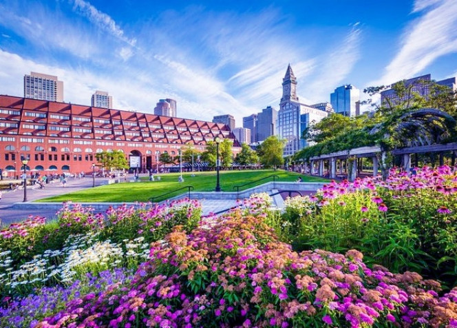
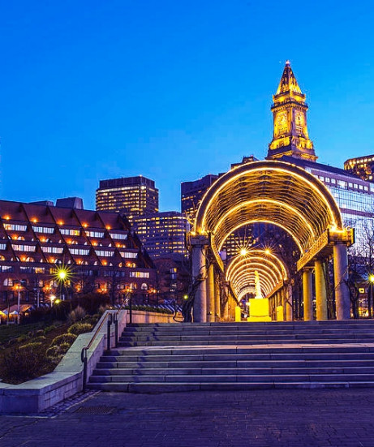
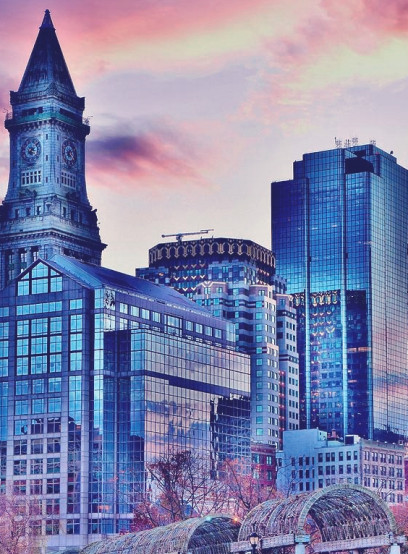

Christopher Columbus Park
Located right next to the North End, Christopher Columbus Park is an Instagramer’s dream! It has views of the harbor and vine-covered archways. During peak times, it will be hard to get a photo without people in the background, but it is an amazing spot to shoot early in the morning when the sun is coming up over the water


